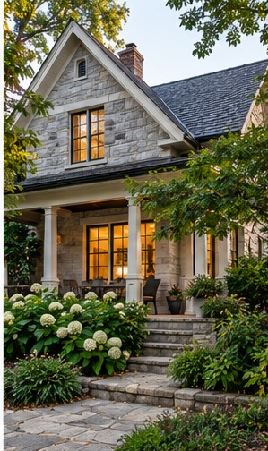

Interiors / Renovation Journal
Renovating a Character Home
Preserve defining details while upgrading function and comfort.
Retrospective topic: January 2026 · Oakwaters Journal

Older homes often have proportions and materials worth retaining, even when their systems need attention.
Document what makes the house distinctive
Identify original trim, doors, masonry, proportions and craftsmanship worth retaining. Photograph and measure details before demolition or replacement.
Modernize carefully behind the finishes
Electrical, plumbing, insulation and moisture improvements may require targeted openings. Heritage designation or local conservation rules may affect permitted changes.
Planning a renovation?
Explore what is possible for your home with Oakwaters Construction.
Discuss Your Project → How to Build a Renovation Wish List
How to Build a Renovation Wish List